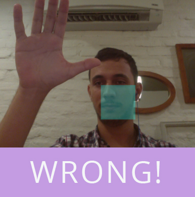

Just Canvas
Just Dance Idea + HTML5 Canvas Implementation
This is a JavaScript experiment to capture movements. Currently only works with one hand. But in the future will be with both. You can help the project on github.

Notes: This application requires a good light to work well and when you play use a closed hand.